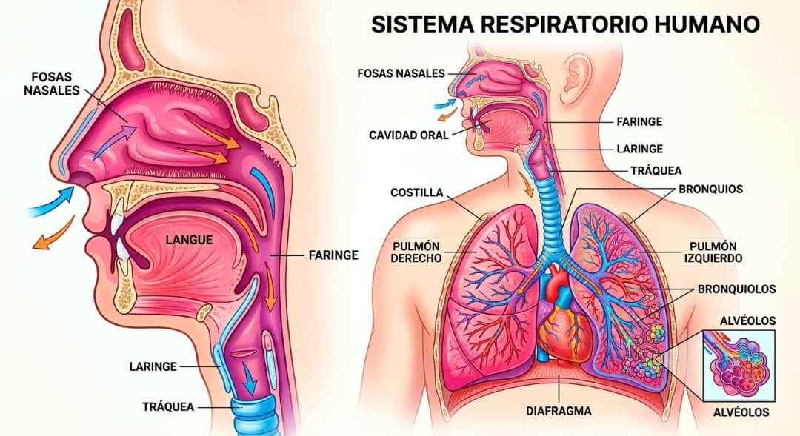

Selecciona un órgano para explorar su estructura y función fisiológica

Imagen anatomia.jpg no detectada
Asegúrate de subir el archivo anatomia.jpg en la misma carpeta que tu index.html en tu repositorio de GitHub.
Es la vía principal de entrada del aire al sistema respiratorio. Está recubierta por una mucosa especializada que tibia, humidifica y filtra el aire antes de que llegue a las vías inferiores.
Los plexos vasculares calientan el aire inhalado hasta aproximadamente la temperatura corporal (37°C).
Los vellos nasales y la capa mucosa atrapan partículas, polvo y microrganismos suspendidos.